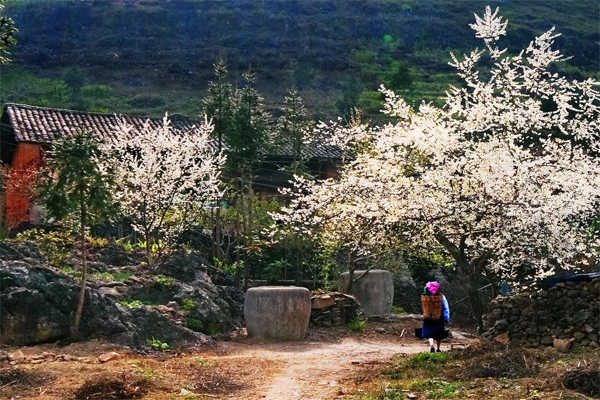
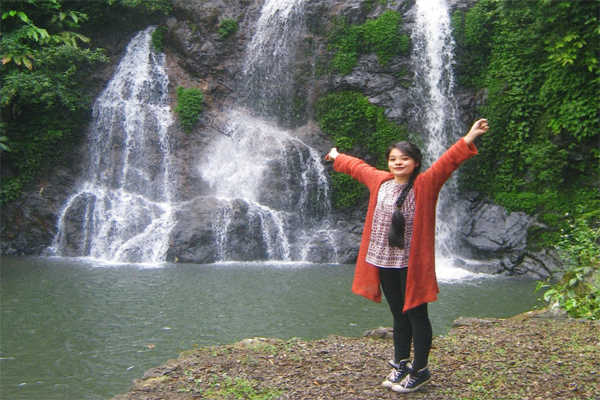
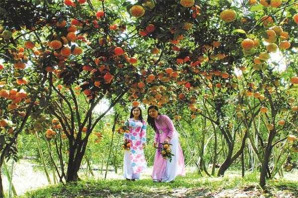
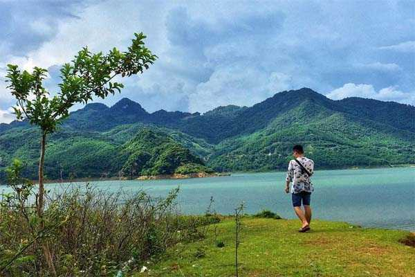
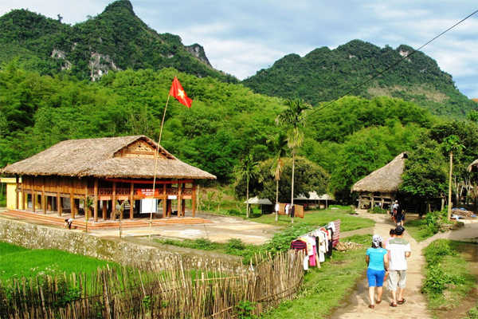
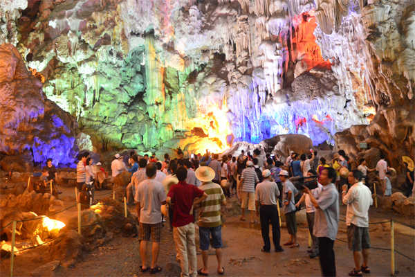
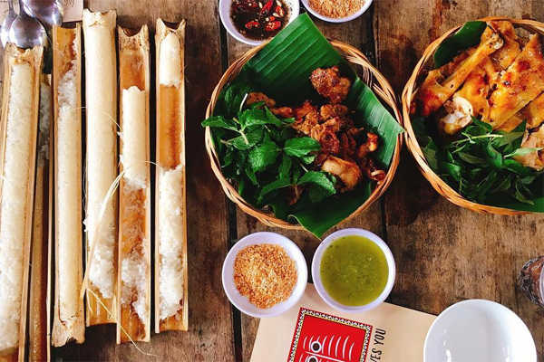
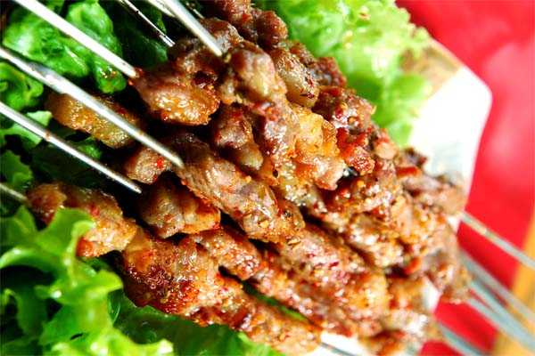
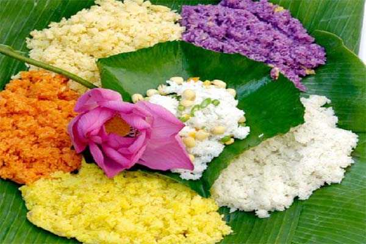
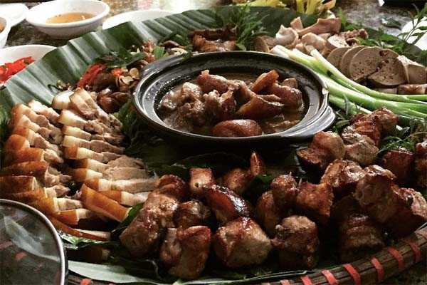

Hòa Bình là cái nôi của văn hoá cổ, có người tiền sử lâu đời sinh sống. Nằm ở cửa ngõ Tây Bắc thủ đô Hà Nội, chỉ cách thủ đô 70km về phía Tây theo quốc lộ 6. Du lịch Hòa Bình đang ngày được cộng đồng du khách trong nước và quốc tế quan tâm. Với nhiều thắng cảnh đẹp, hữu tình, di tích lịch sử. Hòa Bình xứng đáng là điểm đến nghỉ dưỡng, thăm quan lý tưởng trong những dịp lễ. Để hành trình của quý khách được thuận lợi, bạn cần trang bị đầy đủ mọi hành trang. Trong bài viết này, du lịch Việt sẽ chia sẻ cho các bạn kinh nghiệm du lịch Hòa Bình cần thiết, mới nhất mà chúng tôi đã đúc kết được.
I. Giới Thiệu Tổng Quan Về Hòa Bình.
Hoà Bình là một tỉnh miền núi thuộc vùng Tây Bắc Việt Nam, Hòa Bình có địa hình chủ yếu là núi rừng, xen kẽ giữa các sườn núi có các thung lũng hẹp. Đây là vùng đất cổ giàu tiềm năng du lịch. Đây cũng là một tỉnh có nhiều cảnh quan thiên nhiên, hang động, nhiều bản làng dân tộc rất hấp dẫn thu hút du khách trong và ngoài nước.
Rời thủ đô Hà Nội du khách theo nẻo đường số 6 đến km 75 là trung tâm tỉnh lỵ Hòa Bình.
Thành phố Hoà Bình nằm ở hai bờ sông Đà, cách trung tâm thành phố về phía bờ phải 1km là khu khách sạn nhà sàn kiến trúc theo kiểu nhà sàn Mườn – Thái, có tiện nghi đầy đủ. Đội ngũ hướng dẫn viên du lịch ở đây là người dân tộc Mường, Dao, Thái luôn phục vụ tận tình.
Trong hành trình du lịch Hòa Bình, du khách có thể thưởng thức các món ăn dân tộc, đặc sản cơm lam, thịt nướng, rượu cần và xem các tiết mục cồng chiêng, trống đồng, hát “ví” Mường, hát “khắp” Thái.
II. Thời Điểm Du Lịch Hòa Bình Lý Tưởng.
Mỗi mùa, Hòa Bình có một vẻ đẹp riêng biệt vì vậy du khách có thể đến đây bất kỳ thời điểm nào trong năm, tuỳ theo sở thích. Nếu bạn muốn chiêm ngưỡng cảnh tượng thuỷ điện hoà bình hùng vĩ xả nước có thể đến vào mùa mưa.
Du khách muốn đến Hòa Bình để nghỉ mát thì nên đi vào mùa hè, đến các điểm nghỉ dưỡng hấp dẫn như Thung Nai, Mai Châu để được hít thở bầu không khí trong lành, mát mẻ.
Du khách muốn hoà mình vào lễ hội đặc trưng địa phương có thể ghé vào tháng 4 – 6 âm lịch. Đây là thời điểm diễn ra lễ hội chùa Tiên. Bạn muốn khám phá vẻ đẹp Lũng Vân thì nên đi đến Hòa Bình vào tháng 1 – tháng 3. Nếu du khách muốn chiêm ngưỡng cảnh đồng lúa trên ruộng bậc thang chín vàng đặc sắc có thể ghé vào tháng 9 – 10.
III. Hướng Dẫn Đi Đến Hòa Bình.
Hòa Bình nằm khá gần với thủ đô Hà Nội, vì thế bạn có thể dể dàng đi đến đó bằng một trong 2 phương tiện chính sau:
Xe khách: du khách từ Hà Nội có thể đến một số bến xe Hà Nội như Giáp Bát, Mỹ Đình, Gia Lâm,… bắt xe đi Hoà Bình. Thời gian di chuyển thông thường tầm 2 -3 giờ. Giá vé tầm 100k vnđ.
Xe Máy: Nhiều bạn trẻ, nhất là giới phượt thủ thích đi xe máy từ thủ đô đến Hòa Bình để được tự do thưởng ngoạn cảnh đẹp trên đường đi. Bạn lưu ý khi đi xe máy cần chuẩn bị đầy đủ giấy tờ cần thiết, đeo khẩu trang, kính mát để tránh bụi và nắng gió trên đường.
IV. Khách Sạn Hòa Bình.
Sau khi đi đến Hòa Bình, công việc đầu tiên của du khách sẽ là tìm đến khách sạn, nhà nghỉ để nghỉ ngơi, nạp năng lượng để chuẩn bị cho hành trình khám phá vùng đất Hoà Bình. Theo kinh nghiệm chúng tôi bạn nên thuê những khách sạn, nhà nghỉ ở gần các khu du lịch, nghỉ dưỡng, để tiện cho việc đi lại. Dưới đây là một số khách sạn, nhà nghỉ lý tưởng bạn có thể tham khảo.
1. Mai Chau Sunset Boutique Hotel
Là khách sạn tiêu chuẩn 3 sao, có giá cả hợp lý. Toạ lạc tại Poom Coọng, Huyện Mai Châu. Đặt biệt là khách sạn có tầm nhìn đẹp hướng về phía núi đồi. Được bao phủ bởi hệ thống thực vật đa dạng giúp điều hoà và làm cho bầu không khí trong lành. Là khách sạn đáng để trải nghiệm của du khách.
2. Hoa Binh 2 Hotel.
Là khách sạn lý tưởng cho du khách muốn tìm hiểu về văn hoá dân tộc miền núi. Khách sạn được thiết kế theo chuẩn 2 sao, toạ lạc tại 395 An Dương Vương, tp Hòa Bình. Khi bước vào trong khách sạn bạn sẽ thấy ngỡ ngàng bởi lối kiến trúc đặc sắc của người dân tộc Mường, nhà sàn, cách bài trí đồ thổ cẩm làm cho nơi đây như một phần của cuộc sống người dân tộc miền núi.
3. Mai Chau Lodge.
Khách sạn được đánh giá là điểm nghỉ dưỡng sang trọng, nhưng giá cả hợp lý. Khách sạn được thiết kế chuẩn 3 sao, toạ lạc tại thị trấn Mai Châu, huyện Mai Châu.
Đến với Mai Châu Logde du khách sẽ có một trải nghiệp thú vị. Một điểm nghỉ dưỡng hấp dẫn, trong không gian thoáng đãng, sự thiết kế hợp lý để du khách có thể hưởng thụ không khí trong lành, tầm nhìn tốt. Khi ở đây bạn có thể thưởng thức cảnh đẹp bình minh và hoàng hôn tại Hòa Bình. Đồng thời từ đây du khách cũng dể dàng đi đến những điểm du lịch khác.
V. Địa Điểm Du Lịch Hòa Bình Không Thể Bỏ Qua.
Sau khi đã có chổ ở ổn định để nghỉ ngơi, du khách có thể an tâm hành trình khám phá Hòa Bình. Sau đây là những điểm du lịch không thể bỏ qua.
1. Mai Châu.

Từ khách sạn, nhà nghỉ Mường Hòa Bình, vượt 60km đường núi cánh cung sông Đà, sông Mã cao 150m, du khách sẽ thấy khu nhả nghỉ Thái ở Mai Châu hiện ra ở giữa hồ, như một bông sen nhô lên giữa một vùng non nước đẹp tựa bức tranh thuỷ mặc.
Mai Châu là địa điểm du lịch hấp dẫn nhất trong hành trình du lịch Hòa Bình. Từ những đoạn đèo hiểm trở nhìn xuống dưới là hàng loạt cây cối mọc san sát nhau, xung quanh là bản làng dân tộc với cuộc sống bình dị, cùng những đồng lúa, thung lũng đẹp nên thơ.
Trên đường đến Mai Châu, du khách nên dừng lại tại đèo Thung Khe để chiêm ngưỡng vẻ đẹp của ngọn đồi có độ cao 1000m, so với mực nước biển. Tại đây phóng tầm nhìn ra xa du khách tưởng chừng như bao quát không gian rộng lớn, kỳ vĩ, mây mù giăng lối núi rừng Tây Bắc.
Thăm thung lũng Mai Châu bạn sẽ được chiêm ngưỡng nghệ thuật kiến trúc thủ công mỹ nghệ, đặc biệt hàng thổ cẩm của dân tộc Thái tài hoa và thưởng thức các món ăn độc đáo của người Thái, hoà nhập vào đêm hội xoè cùng các cô gais Thái duyên dáng.
2. Thung Nai.
Là một địa danh du lịch hấp dẫn cuốn hút, Thung Nai được ví như là Vịnh Hạ Long của Hòa Bình. Khi lên thuyền đi khám phá Thung Nai, bạn sẽ có cơ hội chiêm ngưỡng những hòn đảo đá huyền bí giữa lòng hồ, khám phá những cánh rừng nguyên sinh. Bao phủ xung quanh là cảnh vật đẹp hữu tình, làn nước trong xanh màu ngọc bích, bên trên là làn mây trắng xoá bồng bềnh. Thung Nai với vẻ đẹp hoang sơ, hùng vĩ nhưng ẩn chứa nét trữ tình.
3. Cửu thác Tú Sơn.

Hình ảnh thác hiện ra giống như tên gọi vốn có của nó, gồm 9 dòng thác, mỗi dòng có một vẻ đẹp riêng biệt, hoà quyện vào nhau. Với những ai yêu thích phiêu lưu khám phá thì đây là nơi lý tưởng đấy. Tại thác Cửu Sơn khung cảnh xung quanh là một khu rừng nguyên sinh, với không gian thơ mộng và bầu không khí trong lành, khiến cho lòng bạn trở nên nhẹ nhàng thanh thản lạ lùng.
4. Vườn Cây Ăn Quả Kỳ Sơn.

Khách du lịch Hoà Bình có thể ghé thăm ở vùng núi kỳ lạ của Kỳ Sơn và cao nguyên Cao Thong với đặc thù về vườn cây ăn quả Tây Bắc. Hiện nay một khu bảo tồn thuỷ sinh học đang được tôn tạo quy tập, với “bảo tàng văn hoá Hòa Bình” đã hình thành tại khu du lịch nhà sàn.
5. Thung lũng Ba Khan.

Hình ảnh Ba Khan hiện ra một vẻ đẹp trầm mặc trong biển sương mờ ảo, tựa chốn thần thiên. Ba Khan là một thung lũng cuốn hút giới du khách thăm quan, xung quanh là nhiều cây trúc được trồng xen kẻ những ngôi nhà truyền thống cổ xưa người Mai Châu. Nhìn từ trên cao, trông những ngôi nhà này được bao phủ và khung cảnh trở nên hoang sơ lạ lùng.
6. Núi Xà Lĩnh.

Núi Xà Lĩnh với độ cao 1.500m, là nơi đồng bào dân tộc H’Mông sinh sống. Ở đây đã hình thành tuyến du lịch dã ngoại với những sinh hoạt văn hoá dân gian, đêm lửa trại, săn bắn, leo núi và tắm suối. Tuyến du lịch đi bộ có thể xuyên qua vùng rừng nhiệt đới nguyên sinh Pù Nooc, thăm các động hang phảng phất khí hậu miền nhiệt đới châu Á.
7. Du Lịch Sông Đà.

Sông đà là một nhánh sông thơ mộng, có sự kết hợp hài hoà giữa thiên nhiên và nhân tạo đa dạng, nơi toả bóng những dãy núi tầng tầng lớp lớp. Nhiều du khách thấy thích thú khi đi thuyền trên sông Đà thăm các vùng vịnh, dảo và bán đảo mà ở đó động thực vật đang được bảo tồn, với những bản Mường, bản Dao, bản Tày nằm rải rác ven thung lũng hẹp, ven hồ nước tạo nên bức tranh sơn thuỷ hữu tình.
Bạn có thể du lịch sông Đà bằng thuyền máy, thuyền độc mộc. Du khách có thể vãn cảnh đền bà chúa, Thác Bờ, đền cô, đền Cậu, thăm động Thác Bờ, hàng Rết, động Hoa Tiên độc nhất vô nhin của vùng Tây Bắc.
8. Mường Đông.
Nơi đây có có cảnh sắc thiên nhiên tuyệt thú. Du khách sẽ hiểu được nét sinh hoạt văn hoá của cộng đồng người Dao và người Mường.
Ở đây cũng có bãi tắm đẹp, không phải ven bờ biển mà là trên bờ sông Bôi. Tại đây có nhà nghỉ đủ tiện nghi cùng suối nước khoáng giúp cho du khách có được nhiều khoái cảm, thư giãn và tĩnh tâm sau những ngày dài gió bụi đường xa hay một chuyến di mệt mỏi.
9. Động Thiên Long.

Là một những điểm du lịch Hòa Bình hấp dẫn không thể bỏ qua. Nằm trong quần thể tập hợp các di tích huyện Yên Thuỷ gồm động chính (chính cung) và 2 động nhỏ(tả, hữu cung).
Khi đi sâu vào bên trong, bạn sẽ thấy một thềm đá, chếch lên sẽ vô vàn nhũ đá tạo nên từng tầng lớp mềm mại tựa như bậc thang mây, khi ngước lên trên là những khối đá thạch nhũ rũ được hình thành từ hàng triệu năm trước xuống trông như tấm màn che chắn, cực kỳ ấn tượng.
VI. Đặc Sản Hòa Bình.
Khi đi du lịch được thưởng thức những món ăn ngon là điều nhiều người yêu thích. Dưới đây là những món đặc sản Hoà Bình bạn không thể bỏ qua.
1. Cơm Lam.

Từ lâu đã trở thành món ăn đặc trưng của dân tộc thiểu số miền Bắc nước ta. Món ăn được chế biến một cách giản đơn từ những nguyên liệu đời thường như gạo nếp bọc trong bớp lá, bỏ vô ống nứa non rồi nướng lên than hồng cho chín. Cơm Lam ăn cùng với thịt lợn nướng, vừng.. Cơm Lam khá giản dị nhưng vị hấp dẫn, nên ăn cơm lam lúc nóng, lúc trời lạnh sẽ cảm nhận được vị ngon trọn vẹn của món ăn.
2. Thịt lợn Mường

Là món ăn hấp dẫn, nguyên liệu là thịt những chú lợn được chăn thả trong rừng, chúng hoạt động thường xuyên, ăn những lá cây cỏ, từ nhiên nhiên nên thịt săn chắc, không mỡ khi nướng lên ăn thơm ngon. Thịt lợn được người dân chế biến thành nhiều món ăn khác nhau. Khi đến với Hòa Bình, bạn không nên bỏ qua món ăn này.
3. Xôi nếp nương

Nếp Nương nghe có vẻ lạ lẫm, nhưng đây là một nguyên liệu đặc trưng của địa phương, được người Thái trồng trên thửa ruộng bậc thang ở thung lũng Hoà Bình. Hương vị hấp dẫn thơm ngon và thường được dùng để làm món để thiết đãi khách đến nhà của bà con dân tộc tại Hoà Bình.
4. Cá Nướng.
Là món ăn đặc sản Hoà Bình hàng đầu, người dân ven sông Đà đã đánh bắt cá rồi mang về chế biến. Loại cá này chắc thịt, nướng lên thịt vàng ươm, thơm ngon.
VII. Mua Gì Làm Quà Khi Du Lịch Hòa Bình.
Hòa Bình có nhiều món đặc sản thơm ngon, đặc trưng, nhưng mua gì về làm quà là vấn đề được nhiều du khách quan tâm. Sau đây là những gợi ý của Du Lịch Việt về những món bạn có thể mua về làm quà cho người thân đầy ý nghĩa.
1. Thịt Lợn Thui Luộc.

Là món ăn khá hấp dẫn mà nhiều du khách đã đánh giá cao với việc mua về làm quà. Món ăn này khá đặc trưng chỉ có tại Hoà Bình, thịt lợn đen thui rồi luộc ăn với nước chấm đặc biệt. Thịt thái mỏng từng lát bày lên lá chuối ăn kèm với mắc khén ngon không thể diễn tả.
2. Rượu Cần.
Đây là loại rượu đặc biệt, với công thức chế biến riêng biệt, rượu này thường chỉ được dùng trong những ngày lễ quan trọng của người dân địa phương.
3. Cơm Lam.
Là món ăn đặc trưng của địa phương, không thể nào tìm được tại những trung tâm thành phố lớn. Đây không chỉ đơn thuần là gạo bỏ vô ống tre rồi đem nướng mà có nước cốt dừa thơm ngon. Cơm Lam thường ăn với thịt lợn rừng, măn chua thì càng tuyệt vời hơn nữa. Là sự lựa chọn tốt nhất cho món ăn lý tưởng cho việc mua về làm quà.